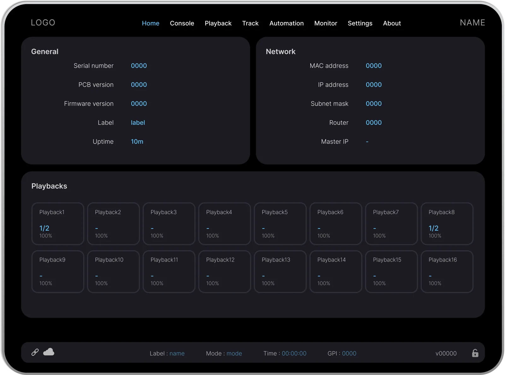

The process was intuitive. I knew what looked right, but I wasn't working with a clear system behind it.

Built to monitor.
Console shows every fixture, zone and circuit in real time. What’s selected stands out, and faults show up straight away. Programmers always know what’s happening.



From idea to live.
A monitoring tool built for theatres, arenas, and live events. Here's how it came together.
-
01
Research
I watched the team use the software day to day. The UI was small and cluttered. Even the people who built it struggled to find things. That told me the problem wasn’t the people, it was the interface. So I proposed a full redesign.
-
02
Benchmark
I went to a tradeshow to see how other companies show the same system. I was surprised that almost everyone had the same layout. Lighting programmers are used to it, so I kept it. I focused on what I could actually make better: making info easier to read and easier to program with. That meant working a lot on typography and contrast.
-
03
UI Design
My first prototype looked beautiful, but it was too far from what lighting programmers are used to. I caught this myself while showing it to the product owner. So I simplified it. The second version fit the audience much better. After 3 rounds, the final design, colors and typography were approved.
-
04
Design System
This design will be reused across 10 different software products, so I built a design system with every reusable component. I also taught the product owner to use it in Figma. Now he builds his own ideas instead of just drawing them.
-
05
Handoff
I didn’t stop at the designs. I also took care of the component library. I added every reusable component from Figma and tested it in Storybook. I still maintain it, and I update it whenever the design document changes.
neutral
#1B1B21
neutral-light
#525264
primary
#0E4161
secondary
#1D89CC
accent
#8F3694
error
#A10707
warning
#F1AA0E
Dark for a reason.
Lighting professionals work in booths, backstage and dimmed control rooms. A bright screen is hard on the eyes there. So Console is dark and built around three core colours. Every colour has a purpose. Instead of adding more, I made shades of them.
Nothing left to default.
The same components scale from a phone screen to a full control panel. It feels the same on every screen, so nobody has to relearn it.
TYPOGRAPHY
Headline 11.5em 24px
Headline 21.2em 19.2px
Headline 31.1em 17.6px
paragraph1em 16px
SPACING
.5em
.8em
1em
1.2em
2em
COMPONENTS
Primary slider
On
Off
Small slider
Button
Grid layout
50%
40%
10%
40%
40%
20%
Picker
None
None
Text

From idea to live.
This was my first big commercial site. Here's how I handled it.
-
01
Brief
Went through the brief with the team and figured out what mattered.
-
02
Research
Looked at other hotel sites for ideas and inspiration.
-
03
Mockup
Built the first version of the design in Figma.
-
04
Polish
Added colours, typography, and the finishing touches.
-
05
Launch
Tested everything and took the site live.
dark-green#12372A
green#436850
light-green#ADBC9F
cream#FBFADA
Island palette.
I wanted a palette of greens and cream. To me, the greens felt like the forest and the cream like the dunes. I used the brighter green to pull the eye toward action buttons, and cream to keep the rest soft and let the green stand out.
Two years later.
I see this project differently now. A few things I'd do differently if I started it today.
I'd do the design system first. Components, grid, spacing. It would have made the whole process cleaner.
Specifically
- Start with a proper grid and spacing system.
- Spend more time on typography.
- Use AI to speed up the early groundwork.

New Design.
A product website for lighting control hardware. Encolor speaks to consumers, not businesses, so it needed its own website. I handled the brand, design and front-end myself. It was my first project at the company, and I launched it within a month.


From idea to live.
Everything from brand to code, here's the process.
-
01
Kickoff
First project at a new company. I sat down with the product owner to set the scope. Three rules were clear from the start. Build it from scratch. Make purple the accent, so people see the brand colour right away. Keep the text short and let the product video explain the product.
-
02
Research
I couldn’t find a product like this one, so I had nothing to copy. I picked websites I liked and studied how they show video and use typography. Then I built my own design from what worked.
-
03
Design
Spent time on colours and typography, then moved into Figma to sketch out the layouts.
-
04
Collaboration
Brought in people with more knowledge of the field to help visualise certain parts.
-
05
Launch
Got the design approved and developed it from scratch.
primary#FFDDFF
accent#8F3694
light#FFFFFF
dark#1F0920
Company colour.
The company colour is purple. I built the whole palette around it, using a dusty shade for surfaces and a brighter one for buttons and key actions.
A year later.
It's only been a year, but I already see things I'd do differently.
Most of the work was visual. I was designing block by block rather than thinking about the full picture.
Now I'd think about the full layout first before touching individual sections.
Specifically
- Set a clear visual hierarchy across the whole page.
- Spend more time on typography and how text flows across the page.
- Reusable components with a shared logic.